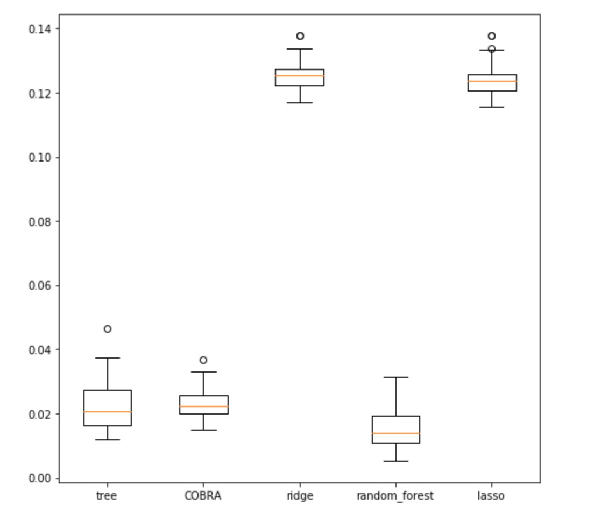

Welcome to pycobra’s documentation!¶
pycobra is a python package which implements ensemble learning algoirthms. It also has a helpful suite of diagnostic and visualisation methods to analyse the aggregates and also the estimators used to create them.
What is Ensemble Learning?¶
Ensemble learning (also known as statistical aggregation) techniques use multiple machine learning algorithms to obtain better predictive performance. Ensemble Learning methods are used for both classification and prediction techniques. The Random Forest algorithm is one well known example, and recently more popular ensemble learning algorithms such as AdaBoost have been regularly winning Kaggle Competitions.
Why pycobra?¶
pycobra is scikit learn compatible, and allows the user to plug in their own pre-trained machine learning models to create new aggregates. Since it largely follows scikit-learn coding conventions and usage, it is easy to use and any object with a predict() method can be used to create the aggregate.
While some of these ensemble learning algorithms we mentioned earlier are available through the open source python machine learning community, it largely works as a black box - its function is to merely predict, and not analyse how the ensemble was made or the machines used to create the ensemble. pycobra aims to serve as a regression analysis toolkit as well, with options to plot predictions, boxplots, QQ-plots, and compare performance between machines.
pycobra includes implementations of the COBRA algorithm introduced by Biau et al., 2016, the Exponential Weighted Aggregate (EWA) introduced by Vovk, 1990; and a COBRA flavored majority vote inspired by Mojirsheibani, 1999.
Features and Usage¶
Setting up a pycobra estimator is very easy, and is akin to how scikit-learn estimators are set up:
cobra = Cobra()
cobra.fit(X, y)
is enough to train the machine, and using cobra’s predict() method let’s it predict on input vectors.
In this case, we are creating an object of the Cobra class which implements the COBRA aggregation method.
Since we aren’t specifying which machines to use in the aggregate, the 4 default machines for prediction (Ridge Regression, Lasso regression, Decision Tree, Random Forest) are loaded. We can keep adding machines to the aggregate with the load_machine() method. By running load_machine_predictions() after we add the new machines, we can update our estimator.
pycobra also allows us to optimise the ensemble by choosing a subset of machines, or optimise its hyperparameters. This is done with the Diagnostics class, which offers multiple methods to understand the optimal behaviour of the estimate.
We set up our Diagnostics class by simply passing our ensemble to it:
cobra_diagnostics = Diagnostics(cobra)
To find the optimal epsilon for this aggregate, we run:
cobra_diagnostics.optimal_epsilon(X_eps, Y_eps, line_points=100)
returns:
(0.49012865501307668, 0.10577705316919428)
Here, X_eps and Y_eps are the samples we find the optimal epsilon over - the tuple returned contains the optimal epsilon value followed by the corresponding MSE for that epsilon, which is the lowest for that data-set, assuming we iterate over 100 equally spaced out epsilon values.
Visualisation is equally straightforward:
cobra_vis = Visualisation(cobra)
We can then use our plotting functions; for example, creating boxplots for each of the machines used in the aggregate is as simple as:
cobra_vis.boxplot()
After which we can expect to see the following plot:
{kind=link}
pycobra offers other visualisation tools, such as Voronoi Tesselations. These can be used to visualise clustering, as well as which data-points are optimsed by which subset of machines - both of these examples are fleshed out in the Jupyter notebooks.
For complete examples and usage, the Jupyter notebooks illustrate the capacity of pycobra.
You can find the source-code on GitHub.
References¶
- Biau, A. Fischer, B. Guedj and J. D. Malley (2016), COBRA: A combined regression strategy, Journal of Multivariate Analysis.
- Dalalyan and A. B. Tsybakov (2007) Aggregation by exponential weighting and sharp oracle inequalities, Conference on Learning Theory.